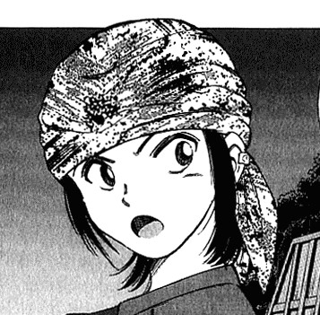
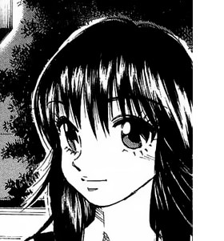
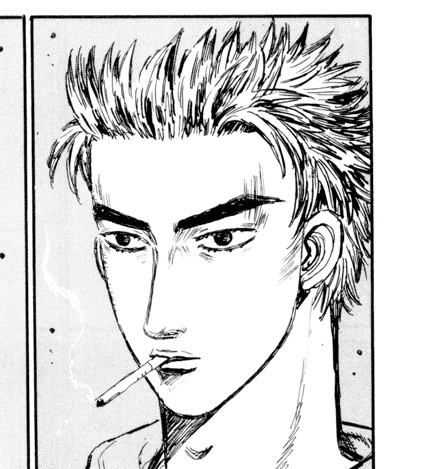

Lebih Mudah & Aman dengan Otomatisasi
Laporan kandang, gudang, & transaksi diinput langsung oleh aktor ke sistem tanpa melibatkan pihak lain.
Laporan kandang, gudang, & transaksi diinput langsung oleh aktor ke sistem tanpa melibatkan pihak lain.
Laporan selalu diperbarui setiap saat berkat sambungan internet.
Mulai dari transaksi, stok, performa, kematian ayam, hingga biaya operasional, semua laporan disajikan dengan konkret.
Menggunakan data-data aktual yang tercantum dalam sistem, perhitungan akurat laba & rugi secara otomatis dimunculkan.
Sola AI, asisten pribadi anda di WhatsApp, siap menjawab segala pertanyaan anda terkait perkembangan peternakan ayam secara up-to-date, kapanpun dan dimanapun.
Sistem bisa diterapkan dalam peternakan ayam layer skala kecil maupun industri.
Perdebatan di dunia bisnis & industri yang sampai sekarang masih diperbincangkan.
Sejak zaman dahulu kala hingga sekarang, hampir semua kegiatan produksi dan transaksi dilakukan secara manual dengan tangan manusia: ABK melaporkan setiap kegiatan pada admin, kemudian admin menulisnya di sebuah buku catatan raksasa berisi kumpulan laporan segala kegiatan usaha.
Cara ini cukup berhasil dan terus dipertahankan, hingga pada era digital seperti sekarang, manusia mulai menemukan banyak kelemahan dari cara konvensional ini, diantaranya kesalahan pencatatan, data yang tidak selalu up-to-date, adanya kemungkinan kecurangan dari aktor, dan baik ABK maupun owner harus mendatangi admin selaku pemegang laporan untuk melihat perkembangan usaha atau memperbaiki laporan yang salah. Cara ini sekarang dinilai sangat tidak aman & praktis di dunia digital yang serba cepat dan transparan ini. Jadi, bagaimana solusinya?
Sekarang bayangkan, jika semua hal tersebut tidak pernah terjadi di peternakan anda. Bayangkan, jika setiap malam atau hari libur kerja, anda tidak perlu repot-repot menelpon admin untuk mengetahui jumlah telur yang dihasilkan kandang anda kemarin. Bayangkan, jika ABK tidak perlu lagi repot-repot mendatangi admin untuk melaporkan berapa ayam yang mati di hari itu beserta membawa buktinya. Bayangkan, jika ada seorang asisten yang selalu siap menyampaikan laba keuntungan harian peternakan anda kapanpun dan dimanapun anda berada, bahkan di dalam perjalanan jauh ataupun di atas ranjang tidur sekalipun. Semua hal itu, telah berada dalam genggaman HP anda. Memperkenalkan, SOLA.
Anda punya pertanyaan singkat tentang aplikasi SOLA? Temukan jawabannya di sini.
Tidak. Sistem ini berbasis web PHP, jadi sangat ringan dan cocok untuk HP spek rendah sekalipun.
Sangat bisa! Sistem ini berbasis web PHP dan awalnya didesain sebagai web komputer, jadi anda bahkan tidak perlu memasang aplikasi di komputer karena sudah ada linknya. Anda tinggal membuka browser.
Tidak perlu khawatir. Data anda dijamin aman 100%! Data tersimpan di ekosistem PHP, bukan di memori HP. Cukup login di perangkat baru, seluruh data Anda langsung kembali utuh.
Sangat bisa! Tampilannya super simpel, ABK cukup ketik angka pakan keluar dan telur yang dipanen, sisanya aplikasi yang menghitung otomatis.
Ini dia apa yang mereka katakan setelah mencoba SOLA!
-- Budi Setiawan

-- Andhi Ayu

-- Thalia Putri

-- Grha Sabha
Tim pemrogram dan pengembang aplikasi di Madiun, Jawa Timur.